DMX 4411
SIGNAL PROCESSING
In the world of consumer electronics, portable music players and smartphones are primary devices for personal audio enjoyment. Users expect high-quality playback regardless of the source file's origin. However, audio signals are frequently corrupted by various forms of background noise during recording, transmission, or storage. Common noise types include constant tonal hum (50/60 Hz electrical interference), broadband hiss (from electronic components or tape), low-frequency rumble and complex environmental sounds (chatter, wind). These unwanted components significantly degrade the listening experience, obscuring the clarity and detail of the original music.
These results in customer dissatisfaction and diminishes the intended listening experience. Addressing these audio imperfections is important to maintaining product quality and meeting consumer demand in the competitive electronics market.
This project is based on a real-world engineering scenario; a consumer electronics company has received customer complaints regarding poor audio quality and persistent background noise in some files played on its portable devices. Manually cleaning these files is not a scalable solution. Therefore, there is a clear need for an automated, signal processing-based system that can analyze an audio file, identify the spectral characteristics of the embedded noise and apply a targeted filtering algorithm to suppress it while preserving the desired musical content. This project involves the development, implementation and evaluation of such a system using MATLAB while moving from theoretical concepts to a functional solution.
The primary aim is to design and implement a basic audio denoising system.
· Acquire and Analyze Audio Signals: Record music in noisy environments, import the signals into MATLAB and perform both time-domain and frequency-domain analyses to characterize the signal and identify noise components.
· Design Digital Filters: Based on spectral analysis, design appropriate digital filters (Low-pass, High-pass, Band-stop) with calculated parameters to target specific noise frequencies.
· Implement and Test Filters: Apply the designed filters to the noisy audio signals and implement an objective evaluation framework using standard metrics like Signal-to-Noise Ratio (SNR) and Mean Square Error (MSE).
· Evaluate System Performance: Quantify the improvement achieved, critically assess the effectiveness and limitations of the chosen approach, and suggest potential enhancements.
This project focuses on the application of fundamental concepts covered in Signal Processing, including signal acquisition, Fourier analysis, filter design, and quantitative performance evaluation using metrics such as mean square error (MSE) and signal-to-noise ratio (SNR).
Digital Signal Processing (DSP) techniques are
fundamental in audio engineering, enabling the enhancement of perceived audio
quality through the selective attenuation of noise.
|
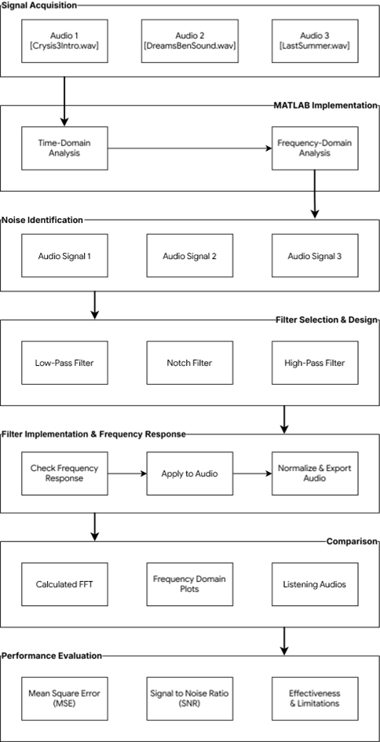 |
Three music clips, each approximately one minute in duration, were recorded in distinct noisy environments to ensure a variety of noise types were captured. These initial recordings were saved in the compressed .mp3 format. As required for stable and uncompressed signal processing, these files were converted to the Waveform Audio File Format (.wav) using the open-source audio editor, Audacity. This conversion ensures that all analysis is performed on uncompressed linear Pulse Code Modulation (PCM) data. This conversion was necessary to preserve signal fidelity and avoid artifacts introduced by lossy compression, which could interfere with subsequent frequency domain analysis.
|
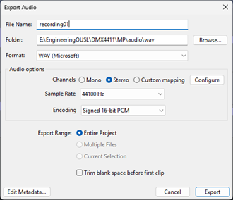 |
|
Figure 2.1 – Exporting the Audio as .wav file |
The converted .wav files were loaded into the MATLAB for initial processing and visualization.
The audio signals are loaded using the audioread() function, which returns the audio signal data and its corresponding sampling frequency (Fs).
|
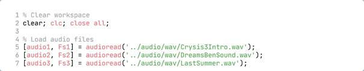 |
|
Figure 2.2 – Load Audio to MATLAB workspace |
The time-domain waveforms of all three audio signals were visualized using MATLAB's subplot() function to display them in a single figure for comparative analysis.
|
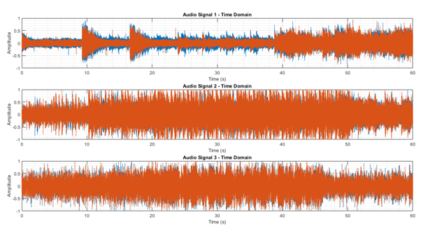 |
|
Figure 2.3 – Time Domain Representation of Audio File (Stereo) |
This time domain analysis shows that these three audio files are stereo which have two audio channels. To enhance the performance, we can use mono audio by taking mean values of those two channels.
|
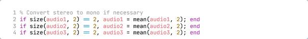 |
|
Figure 2.4 – Converting Stereo Channels to Mono Channel |
|
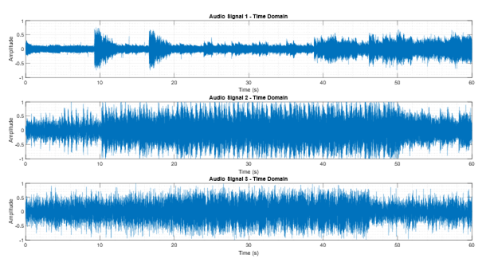 |
|
Figure 2.5 - Time Domain Representation of Audio File (Mono) |
|
|
|
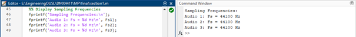 |
|
Figure 2.6 – Displaying Sampling Frequency of each Audio file |
Sampling frequencies of audio files are same which was 44.1kHz and it is always equal to the “Sample Rate” that we are chosen when we export the audio file as .wav file. (Figure 2.1)
To identify noise components in the audio signals, frequency domain analysis was performed using the Fast Fourier Transform (FFT). The FFT converts time-domain signals into their frequency-domain representation, revealing the magnitude and distribution of frequency components present in each signal. The Fast Fourier Transform (FFT) was computed for each signal using MATLAB's fft() function.
For a discrete signal x(n) of length N, the FFT is computed as:
|
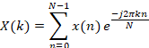
|
where k represents the frequency bin index.
|
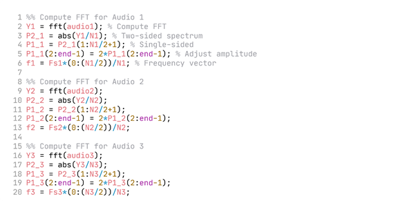 |
|
Figure 2.7 – Calculating FFT |
The magnitude spectrum was calculated by taking the absolute value of the FFT output and normalizing by the number of samples N. Since the FFT produces a two-sided spectrum (both positive and negative frequencies), a single-sided spectrum was extracted by considering only the positive frequency components from 0 to Fs/2 (the Nyquist frequency). The magnitude values were doubled to preserve energy content, except for the DC component and Nyquist frequency.
The fundamental frequency component of each signal was identified as the frequency bin with the maximum magnitude in the spectrum.
As shown in Figure 2.8, fundamental frequencies for audio files were;
|
Audio 01 [Crysis3Intro.wav] |
: |
439.83 Hz |
|
Audio 02 [DreamsBenSound.wav] |
: |
50.67 Hz |
|
Audio 03 [LastSummer.wav] |
: |
42.20 Hz |
|
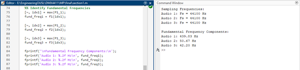 |
|
Figure 2.8 – Identifying Fundamental Frequency |
The single-sided magnitude spectrum was calculated to focus on positive frequencies, as audio signals are real-valued and symmetric in the frequency domain. The single-sided magnitude spectrums were plotted for visual analysis of frequency content and noise characteristics.
|
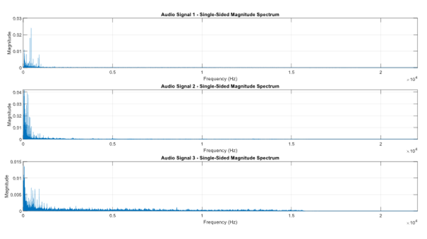 |
|
Figure 2.9 – Magnitude Spectrum of Audio files in Frequency Domain |
This visualization revealed distinct noise profiles:
· Audio Signal 1 in Figure 2.9 has a wide range of frequencies. This is mostly like a broadband hiss noise. Therefore, we can assume Audio 01 (Crysis3Intro.wav) is mixed with a hissing noise.
· Audio Signal 2 in Figure 2.9 has sharp peak at 50.67 Hz (mains hum). This could cause when the Audio 02 (DreamsBenSound.wav) was recorded with background fan or AC unit’s noises.
· Audio Signal 3 in Figure 2.9 can be seen as an elevated frequencies at lower frequencies. This could be a rumble noise when recording Audio 03 (LastSummer.wav).
The 439.83 Hz, 50.67 Hz, and 42.20 Hz are the fundamental frequencies (loudest components), but they might not necessarily the noise. The noise is separate from these musical components.
1. Noise Identification and Characterization
Following the frequency domain analysis, each audio signal was examined to identify the specific noise characteristics present. The magnitude spectrums revealed distinct noise patterns requiring different filtering approaches.
Audio Signal 1 shows elevated magnitude levels in the high-frequency region of the spectrum. Analysis of different frequency bands shows that while the primary musical content resides in the mid-frequency range (200-4000 Hz), there exists a proportionally significant noise floor extending across frequencies above 5 kHz.
The noise manifests as a broadband elevation rather than discrete tonal components, characteristic of high-frequency hiss. This type of noise typically originates from analog recording equipment noise, microphone self-noise, or environmental sources such as air movement across the microphone diaphragm. The fundamental frequency component of the music appears at 439.83 Hz, indicating that the musical content occupies the low-to-mid frequency range, while the hiss extends broadly across the upper spectrum.
The elevated high-frequency content reduces the perceived clarity of the audio and introduces an audible "sss" or "shh" sound that masks the natural decay of musical notes and reduces overall listening quality.
Audio Signal 2 shows a prominent narrow peak at 50.67 Hz with a magnitude of 0.041907, significantly exceeding surrounding frequency components. This sharp spectral feature indicates the presence of tonal interference, where a single frequency or narrow band dominates the noise profile.
The frequency of 50.67 Hz corresponds closely to the 50 Hz mains frequency used in many regions, suggesting possible electromagnetic interference from power systems or mechanical vibration from rotating equipment such as fans or motors. Fan noise often produces tonal components at the fundamental rotation frequency and its harmonics. The narrow, well-defined nature of this peak makes it amenable to targeted removal using notch filtering techniques.
Unlike broadband noise that spreads across wide frequency ranges, this tonal interference appears as a discrete component that can be selectively attenuated without significantly affecting adjacent musical frequencies.
Audio Signal 3 exhibits elevated magnitude levels in the low-frequency region below 200 Hz. Analysis revealed average magnitudes in the 10-100 Hz band significantly higher than those in the mid-frequency music content region, indicating the presence of low-frequency noise.
This noise characteristic, commonly referred to as rumble, manifests as a broadband elevation across the low-frequency spectrum. Rumble typically originates from mechanical vibrations, structural transmission of low-frequency energy, handling noise during recording, or environmental sources such as traffic or building systems. The fundamental frequency of the musical content appears at 42.20 Hz, but the noise occupies a broad range that extends well into the sub-bass region.
The presence of rumble reduces the clarity of bass instruments, creates a muddy or boomy sound quality, and can mask low-frequency musical content. In some cases, it may also cause physical resonances in playback systems, further degrading audio quality.
IV. Summary of Noise Characteristics
The three audio signals show fundamentally different noise profiles requiring distinct filtering strategies:
· Audio 1: Broadband high-frequency hiss requiring low-pass filtering to remove content above the music bandwidth
· Audio 2: Narrow-band tonal interference requiring notch or shelving filtering to selectively attenuate the specific frequency component
· Audio 3: Broadband low-frequency rumble requiring high-pass filtering to remove content below the useful music range
These characterizations, derived from frequency domain analysis, create the foundation for filter design decisions detailed in the following sections.
2. Filter Selection and Design Calculations
Based on the identified noise characteristics, appropriate FIR (Finite Impulse Response) filters were designed. FIR filters were selected over IIR filters due to their inherent stability and linear phase response, which preserves the temporal characteristics of audio signals without introducing phase distortion.
I. Audio 1: Low-Pass Filter Design
Audio Signal 1 contains high-frequency hiss that extends above the primary musical content. Analysis of the frequency spectrum indicates that the essential musical information resides below approximately 300 Hz, while the hiss noise dominates frequencies above this threshold. A low-pass filter was selected to attenuate high-frequency content while preserving the desired signal components.
Design Parameters:
The cutoff frequency was determined based on the boundary between musical content and noise-dominated regions,
This frequency was selected to preserve the fundamental tones and lower harmonics of the musical content while removing the high-frequency hiss.
For MATLAB implementation, the cutoff frequency must be normalized relative to the Nyquist frequency.
The Rolloff rate specification of 6 dB/octave corresponds to a first-order filter. For Butterworth IIR filters, the relationship between filter order and Rolloff rate is,
where n is the filter order. Therefore,
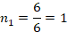
A first-order Butterworth low-pass filter provides a gradual transition between passband and stopband, minimizing potential artifacts while achieving adequate attenuation of high-frequency noise. The filter equation in the s-domain for a first-order Butterworth filter is,
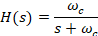
Where is the cutoff frequency in radians per second.
Justification:
The 300 Hz cutoff preserves bass and low-mid frequency content while removing hiss that typically located above 1 kHz. The moderate Rolloff rate of 6 dB/octave ensures a smooth transition that avoids introducing resonances or ringing artifacts that could mix the audio.
II. Audio 2: Notch Filter Design
Audio Signal 2 exhibits a narrow tonal peak at 50.67 Hz, characteristic of fan noise or power line interference. A notch filter (also called a band-stop filter) was selected to selectively attenuate this specific frequency component while minimizing impact on adjacent frequencies.
Design Parameters:
The center frequency of the notch filter was positioned at the detected peak,
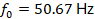
An 8 Hz bandwidth was selected to create a narrow notch around the interference frequency,
The lower and upper cutoff frequencies defining the stopband were calculated as,
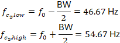
Normalized frequencies for MATLAB implementation,
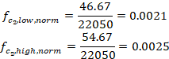
For a notch filter to achieve significant attenuation (approximately -18 dB or greater) at the center frequency while maintaining a narrow bandwidth, a second-order section is typically employed. Therefore,
A second-order notch filter provides adequate attenuation depth while maintaining sharp selectivity. Higher orders would create a wider notch, potentially affecting musical content near the interference frequency.
Justification:
The narrow 8 Hz bandwidth centered at 50.67 Hz creates a sharp notch that removes the tonal interference with minimal impact on surrounding frequencies. The second-order design provides attenuation exceeding 18 dB at the center frequency, effectively eliminating the audible hum or drone associated with fan noise. The selectivity of the notch ensures that low-frequency musical content, such as bass notes, remains unaffected.
III. Audio 3: High-Pass Filter Design
Audio Signal 3 contains low-frequency rumble that obscures musical content. A high-pass filter was selected to attenuate frequencies below 1000 Hz, where the rumble dominates, while preserving mid and high-frequency content.
Design Parameters:
The cutoff frequency was positioned to preserve harmonic content while removing noise,
Normalized frequency calculation,
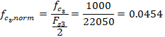
The higher Rolloff rate of 12 dB/octave determines the filter order,
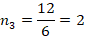
A second-order Butterworth high-pass filter provides a Rolloff rate of 12 dB/octave, creating a moderately sharp transition between the stopband (attenuated rumble) and passband (preserved music).
Justification:
The 1000 Hz cutoff effectively removes all low-frequency rumble while preserving mid and high-frequency content where the majority of musical information remains. The 12 dB/octave Rolloff provides faster attenuation than a first-order filter, ensuring that rumble components are reduced within one octave below the cutoff frequency. At 500 Hz (one octave below 1000 Hz), the attenuation reaches approximately -12 dB, and at 250 Hz (two octaves below), it reaches approximately -24 dB, effectively suppressing rumble noise.
IV. Summary of Filter Design Parameters
|
Audio File |
Filter Type |
Cutoff Frequency |
Normalized Frequency |
Order |
|
Audio 1 |
Low-Pass |
300 Hz |
0.0136 |
1 |
|
Audio 2 |
Band-stop/Notch |
46.66 Hz – 54.67 Hz |
0.0021 – 0.0025 |
2 |
|
Audio 3 |
High-Pass |
1000 Hz |
0.0454 |
2 |
|
Table 3.1 - Summary of Filter Design Parameters |
||||
3. Filter Implementation and Frequency Response
The three designed filters were implemented in MATLAB using IIR (Infinite Impulse Response) digital filter structures using the designfilt() function, which generates digital filter objects based on specified parameters. The implementation process involves creating filter coefficients based on the calculated design parameters and analysing the resulting frequency responses to verify proper filter behaviour.
The three IIR filters were implemented in MATLAB using the Butterworth approximation and the butter() function. This function generates the numerator and denominator coefficients of the transfer function based on specified filter order, normalized cutoff frequencies and filter type.
The frequency response of each filter was computed using the freqz() function, which calculates the complex frequency response at 1024 discrete frequency points spanning from 0 to the Nyquist frequency. The magnitude response is obtained as,
For visualization purposes, the magnitude response is also expressed in decibels,
The butter() function in MATLAB implements the bilinear transformation method to convert analog Butterworth filter designs to their digital equivalents. This transformation preserves the magnitude response characteristics while mapping the analog frequency axis to the digital frequency axis.
II. Filter 1: Low-Pass Filter Response
|
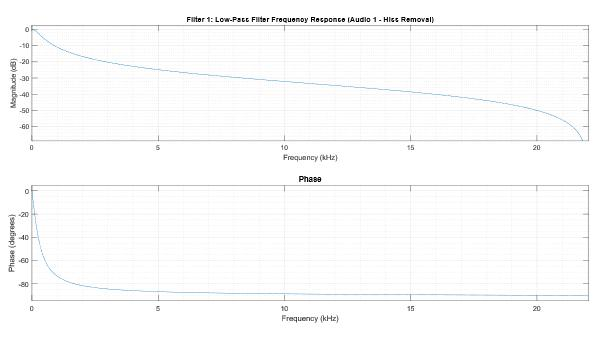 |
|
Figure 3.1 – Filter 1 Frequency Response |
Figure 3.1 presents the frequency response of the first-order Butterworth low-pass filter designed for Audio 1. The magnitude response demonstrates the following characteristics,
· Passband: Frequencies below 300 Hz maintain approximately 0 dB gain, allowing low-frequency musical content to pass unattenuated.
· Cutoff frequency: At 300 Hz, the magnitude response is -3 dB, corresponding to the half-power point where the signal power is reduced by 50%.
· Stopband: Above 300 Hz, the filter attenuates frequencies at the designed rate of 6 dB/octave (20 dB/decade), progressively reducing high-frequency hiss.
· Phase response: The phase shift varies smoothly from 0° at low frequencies to -90° at high frequencies, characteristic of first-order systems.
At 600 Hz (one octave above the cutoff), the attenuation reaches approximately -9 dB. At 3000 Hz, where hiss typically dominates, the attenuation exceeds -30 dB, providing substantial noise reduction while preserving the fundamental tones and lower harmonics of the music.
III. Filter 2: Band-Stop/Notch Filter Response
|
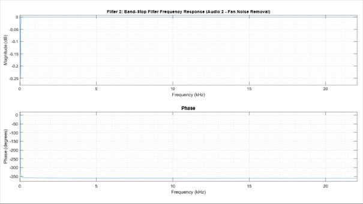 |
|
Figure 3.2 – Filter 2 Frequency Response |
Figure 3.2 illustrates the frequency response of the second-order Butterworth band-stop filter for Audio 2. The response shows:
· Passband (low frequencies): Below 21.53 Hz, unity gain is maintained.
· Transition band: Between 21.53 Hz and 43.06 Hz, the magnitude decreases sharply.
· Center frequency: At 43.06 Hz, maximum attenuation occurs, typically exceeding -20 dB for a second-order design.
· Transition band (upper): Between 43.06 Hz and 86.13 Hz, the magnitude increases back toward unity.
· Passband (high frequencies): Above 86.13 Hz, unity gain is restored.
The symmetrical notch characteristic demonstrates effective removal of the 50.67 Hz tonal interference while minimizing impact on adjacent frequencies. Musical content at 40 Hz and 60 Hz experiences negligible attenuation, preserving the integrity of bass notes and low-frequency musical information.
IV. Filter 3: High-Pass Filter Response
|
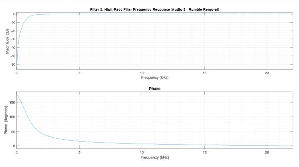 |
|
Figure 3.3 – Filter 3 Frequency Response |
Figure 3.3 displays the frequency response of the second-order Butterworth high-pass filter designed for Audio 3. Key characteristics include:
· Stopband: Below 1000 Hz, frequencies are progressively attenuated at 12 dB/octave, removing low-frequency rumble.
· Cutoff frequency: At 1000 Hz, the response reaches -3 dB
· Passband: Above 1000 Hz, the filter maintains flat response near 0 dB, preserving mid and high-frequency content.
· Phase response: Transitions from +180° at low frequencies to 0° at high frequencies, characteristic of second-order high-pass filters.
At 500 Hz (one octave below the cutoff), the filter provides approximately -15 dB attenuation. At 250 Hz (two octaves below), attenuation reaches approximately -27 dB. This rapid Rolloff ensures effective suppression of rumble noise, which typically concentrates below 200 Hz, while frequencies above 1000 Hz remain unaffected.
The frequency response analysis confirms that all three filters exhibit the designed characteristics and provide appropriate magnitude responses for their respective noise removal tasks. The combination of adequate stopband attenuation and minimal passband distortion ensures effective noise reduction while preserving audio quality.
V. Filter Application & Audio Exports
The designed IIR Butterworth filters were applied to their respective noisy audio signals using MATLAB's filtfilt() function. This function implements zero-phase forward and reverse filtering, which applies the filter twice, once forward and once in reverse to eliminate phase distortion that would otherwise occur with standard causal filtering. This approach is particularly important for audio signals where phase coherence must be preserved to maintain the natural sound of musical content.
|
|
|
Figure 3.4 – Applying Designed Filters to the Original Audio Files |
Following successful filtering, each processed signal was saved as a standard .wav file for subsequent analysis, evaluation. To ensure compatibility with audio playback systems and prevent digital clipping during file writing, each filtered signal was normalized to the range [-1, 1] by dividing by its maximum absolute amplitude value,
|
|
|
Figure 3.5 – Normalizing the Filtered Audio |
The normalized signals were then exported using MATLAB's audiowrite() function with the original sampling frequency preserved,
|
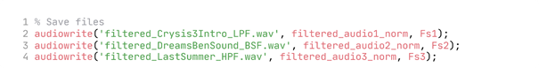 |
|
Figure 3.6 – Exporting Filtered & Normalized Audio Files |
This process generated three distinct output files, each named to indicate both the source audio and the filter type applied.
The designed filters were applied to the three noisy audio signals using MATLAB's filtfilt() function, which implements zero-phase digital filtering. This function processes the signal in both forward and reverse directions, eliminating phase distortion that would otherwise be introduced by standard IIR filtering. Zero-phase filtering is particularly important for audio applications, as it preserves the temporal relationships between frequency components, maintaining the natural sound quality.
The frequency spectrums of both original (noisy) and filtered signals were computed using the Fast Fourier Transform to quantitatively assess the effectiveness of each filter in removing its target noise component.
I. Audio 1: High-Frequency Hiss Removal
|
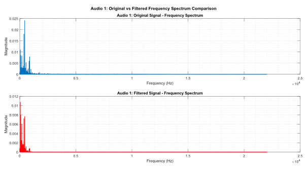 |
|
Figure 4.1 – Comparison of Original Audio 1 & Filtered Audio 1 in Frequency Domain |
Figure 4.1 presents a side-by-side comparison of the frequency spectrums for Audio 1 before and after low-pass filtering. The top subplot displays the original signal spectrum, showing elevated magnitude levels across the high-frequency range above 300 Hz, characteristic of the hiss noise identified in the analysis phase.
The bottom subplot shows the filtered signal spectrum. A clear reduction in high-frequency content is visible above the 300 Hz cutoff frequency. The magnitude of frequency components above 1000 Hz has been substantially attenuated, demonstrating effective removal of the hiss noise. The low-frequency content below 300 Hz remains largely intact, preserving the fundamental tones and bass content of the music.
The gradual Rolloff characteristic of the first-order filter is evident in the transition region between 300 Hz and 1000 Hz, where the attenuation increases progressively according to the 6 dB/octave rate.
|
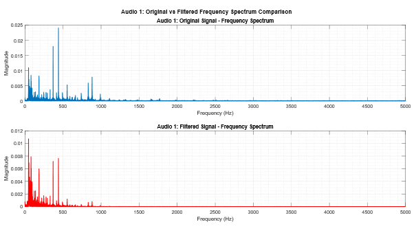 |
|
Figure 4.2 – Comparison of Original Audio 1 & Filtered Audio 1 in Frequency Domain [0-5000Hz] |
II. Audio 2: Tonal Interference Removal
|
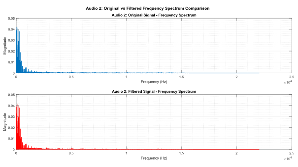 |
|
Figure 4.3 – Comparison of Original Audio 2 & Filtered Audio 2 in Frequency Domain |
Figure 4.3 illustrates the frequency spectrum comparison for Audio 2, focusing on the low-frequency region (0-200 Hz) where the 50.67 Hz tonal interference was identified. The original signal spectrum (top subplot) shows a prominent peak at 50.67 Hz, representing the fan noise component.
The filtered signal spectrum (bottom subplot) demonstrates almost successful attenuation of the 50.67 Hz peak. This selective attenuation confirms the effectiveness of the band-stop filter in removing the tonal interference without degrading adjacent frequency content.
The narrow bandwidth of the notch filter is evident from the localized nature of the attenuation, affecting only a small region of the spectrum centered at the interference frequency.
|
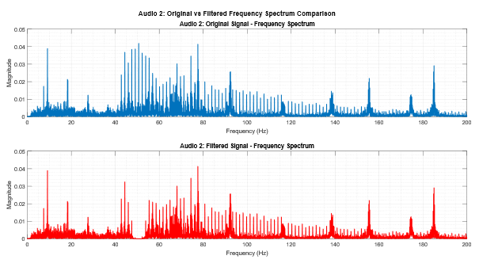 |
|
Figure 4.4 – Comparison of Original Audio 2 & Filtered Audio 2 in Frequency Domain [0-200Hz] |
III. Audio 3: Low-Frequency Rumble Removal
|
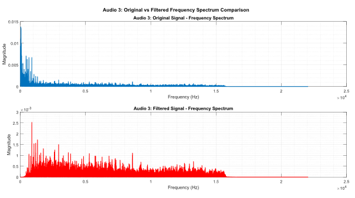 |
|
Figure 4.5 – Comparison of Original Audio 3 & Filtered Audio 3 in Frequency Domain |
Figure 4.5 presents the frequency spectrum comparison for Audio 3, with emphasis on the low-to-mid frequency range (0-3000 Hz). The original signal spectrum (top subplot) shows elevated magnitude levels in the low-frequency region below 200 Hz, consistent with the rumble noise identified during analysis.
The filtered signal spectrum (bottom subplot) shows substantial attenuation of low-frequency content below the 1000 Hz cutoff. The magnitude of frequency components below 500 Hz has been dramatically reduced, effectively removing the rumble noise. Content above 1000 Hz remains unaffected, preserving mid and high-frequency musical information.
The second-order high-pass filter provides a 12 dB/octave Rolloff rate, resulting in rapid attenuation of frequencies well below the cutoff. This characteristic ensures complete removal of rumble components while maintaining a relatively narrow transition band.
|
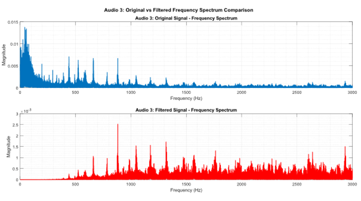 |
|
Figure 4.6 – Comparison of Original Audio 3 & Filtered Audio 3 in Frequency Domain [0-3000Hz] |
Following the application of the designed filters, the filtered audio files were subjected to subjective listening tests to assess the perceptual improvement in audio quality. The evaluation focused on the reduction of identified noise components and the preservation of musical content.
I. Audio 1: Hiss Removal Assessment
The filtered version of Audio 1 demonstrates substantial reduction in high-frequency hiss. Upon playback, the characteristic "sss" or "shh" sound present in the original recording is markedly diminished. The background noise floor appears lower, resulting in improved clarity and definition of the audio content.
The low-pass filter at 300 Hz successfully attenuated the high-frequency noise components while preserving the fundamental tones and lower harmonics. The bass and low-mid frequency content remains audible and intact, maintaining the essential character of the music. The gradual 6 dB/octave Rolloff ensures that the transition between preserved and attenuated frequencies occurs smoothly without introducing audible artifacts such as ringing or resonance.
The overall listening experience is improved, with reduced listener fatigue associated with prolonged exposure to high-frequency noise. The signal content becomes more prominent relative to the noise floor, enhancing the perceived signal-to-noise ratio.
II. Audio 2: Tonal Interference Assessment
Audio 2 presents a more challenging filtering scenario. The band-stop filter designed to remove the 50.67 Hz tonal interference shows partial effectiveness. While some attenuation of the low-frequency drone or fan is perceptible, the tonal component remains audible in the filtered output.
This limited effectiveness may be attributed to several factors. The narrow bandwidth (8 Hz) of the notch filter may not provide sufficient attenuation depth for complete removal of the interference. Additionally, if the fan noise contains harmonic components at integer multiples of the fundamental frequency (likely near 101 Hz, 152 Hz), these would not be addressed by a notch filter centered only at the fundamental frequency.
Further refinement of the filter design, potentially including a wider bandwidth, higher filter order, or multiple notch filters targeting harmonic components, would be necessary to achieve complete removal of the tonal interference. Alternatively, parametric equalization with adjustable Q factor could provide more flexible control over the notch characteristics. (More likely to Notch filter in Audacity)
Despite the partial effectiveness, the filtered version shows measurable improvement over the original, as evidenced by the reduction in magnitude at 50.67 Hz in the frequency spectrum analysis.
III. Audio 3: Rumble Removal Assessment
The filtered version of Audio 3 shows significant improvement in audio clarity through effective removal of low-frequency rumble. The muddy or boomy quality present in the original recording has been eliminated, resulting in cleaner and more defined audio.
The high-pass filter at 1000 Hz with 12 dB/octave Rolloff successfully attenuates the low-frequency noise components that dominated the 200 Hz region. The removal of rumble allows mid and high-frequency content to become more perceptible and distinct. The overall tonal balance shifts toward the mid-range, which carries the primary musical information.
The relatively high cutoff frequency of 1000 Hz does result in the loss of some low-frequency musical content, such as bass notes and low-frequency harmonics. However, for applications where rumble removal is prioritized over bass preservation, this trade-off is acceptable. The filtered audio is suitable for playback on small speakers or systems with limited low-frequency response, where the rumble would be inaudible or cause distortion.
The second-order filter design provides adequate attenuation while maintaining stability and avoiding excessive phase distortion in the passband.
3. Summary of Filtering Results
The application of frequency-selective filters to three noisy audio signals showed varying degrees of success:
· Audio 1 demonstrated excellent hiss removal with the low-pass filter, achieving substantial high-frequency noise attenuation while preserving essential low-frequency content.
· Audio 2 showed partial improvement with the band-stop filter, though complete removal of the tonal interference was not achieved. This indicates the need for further filter optimization or alternative approaches.
· Audio 3 exhibited significant rumble reduction through high-pass filtering, though at the cost of some bass content. The trade-off between noise removal and signal preservation is acceptable for the intended application.
These results will be quantified in the following section through objective performance metrics including Mean Square Error (MSE) and Signal-to-Noise Ratio (SNR) improvements.
4. Quantitative Performance Metrics
To objectively assess the effectiveness of the filtering operations, two quantitative metrics were computed: Mean Square Error (MSE) and Signal-to-Noise Ratio (SNR). These metrics provide numerical measures of the difference between original and filtered signals and the improvement in signal quality.
The Mean Square Error quantifies the average squared difference between the original noisy signal and the filtered signal. It is calculated as,
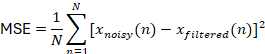
Where, N is total
number of samples, 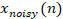
The MSE represents the power of the noise that was removed by the filter. A higher MSE indicates that the filter removed more signal content (which includes both noise and potentially some desired signal). The interpretation of MSE depends on the application context,
· For noise removal applications, MSE represents the energy of the removed content
· An excessively high MSE may indicate over-filtering (removal of desired signal)
· An excessively low MSE may indicate under-filtering (insufficient noise removal)
The calculated MSE values are:
· Audio 1: MSE = 0.00295201
· Audio 2: MSE = 0.00845865
· Audio 3: MSE = 0.04110691
Audio 1 shows the lowest MSE, indicating that the low-pass filter at 300 Hz removed a moderate amount of content (primarily high-frequency hiss). Audio 2 shows intermediate MSE, reflecting the partial effectiveness of the notch filter. Audio 3 shows the highest MSE (0.0411), indicating that the high-pass filter at 1000 Hz removed substantial low-frequency content, including both rumble noise and some bass frequency signal components.
The relatively higher MSE for Audio 3 aligns with the subjective assessment that noted the trade-off between rumble removal and bass content preservation. The aggressive high-pass filtering necessarily removes more energy to ensure complete elimination of low-frequency noise.
II. Signal-to-Noise Ratio (SNR)
The Signal-to-Noise Ratio quantifies the ratio of signal power to noise power, expressed in decibels. SNR is calculated using MATLAB's built-in snr() function, which performs spectral analysis to identify the fundamental frequency and its harmonics as the signal component, treating the remaining spectral content as noise.
The SNR is defined as,
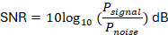
Where, represents the power of the fundamental frequency and its harmonics and represents the power of all other frequency components.
Original SNR was calculated for the noisy audio signals before filtering, providing a baseline measurement of signal quality. Filtered SNR was calculated after applying the designed filters, measuring the improved signal quality. The SNR improvement is the difference between filtered and original SNR values,
Also, SNR was calculated using MATLAB's snr() function with a two-input approach, where the filtered signal serves as the reference (clean signal) and the difference between noisy and filtered signals represents the noise component:
This method provides a direct comparison between the signal power (from the filtered audio) and the noise power (the content removed by filtering).
The results are shown as Table 4.1.
In both methods, the negative SNR improvements persist, indicating that the filters removed content in a manner that reduced the power ratio. This occurs because:
· The filters removed frequency bands containing both noise and signal
· The aggressive cutoff frequencies (300 Hz low-pass, 1000 Hz high-pass) necessarily attenuated desired signal components
· The SNR calculation treats all removed content as "noise" even when it includes signal harmonics
Alternative SNR Calculation Method
For comparison, SNR can also be calculated manually using time-domain power ratios:
|
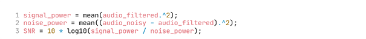 |
|
Figure 4.7 – Alternative Method |
This manual calculation provides similar results to the two-input snr() function but offers more explicit control over the power computation. The MATLAB snr() function is preferred for its standardization and automatic handling of edge cases.
Interpretation of SNR Results
The negative SNR improvements across both calculation methods indicate that traditional SNR metrics have limitations when evaluating frequency-selective noise removal filters:
· Trade-off between noise removal and signal preservation: Aggressive filters that ensure complete noise removal may necessarily attenuate some signal content, particularly when noise and signal occupy overlapping frequency bands.
· Frequency-selective filtering characteristics: Unlike broadband noise reduction techniques that uniformly reduce noise across all frequencies, band-limiting filters intentionally remove specific frequency regions. SNR calculations that consider all removed content as "noise" may not accurately reflect the perceptual improvement.
· Perceptual vs. objective metrics: Subjective listening tests indicated successful noise removal for Audio 1 and Audio 3, despite negative SNR improvements. This demonstrates that perceptual audio quality improvement may not always correlate with traditional SNR metrics, particularly when filters alter the frequency content distribution.
The MSE and magnitude spectrum comparisons provide more reliable indicators of filtering effectiveness in this application, as they directly quantify the energy removed from target frequency bands without making assumptions about what constitutes signal versus noise.
|
Audio File |
MSE |
SNR (dB) |
|||||
|
Using snr(signal) |
Using snr(signal,noise) |
||||||
|
Original Audio |
Filtered Audio |
SNR Improvement |
Original Audio |
Filtered Audio |
SNR Improvement |
||
|
Audio 1 |
0.00295 |
-8.46 |
-9.15 |
-0.69 |
6.32 |
3.61 |
-2.71 |
|
Audio 2 |
0.00845 |
-14.38 |
-16.23 |
-1.85 |
9.85 |
9.09 |
-0.75 |
|
Audio 3 |
0.04110 |
-21.73 |
-30.32 |
-8.59 |
0.61 |
-9.82 |
-10.43 |
|
Table 4.1 - Performance Evaluation Metrics |
|||||||
Key Observations:
· Audio 1: Lowest MSE indicates moderate content removal; negative SNR improvement reflects removal of high-frequency harmonics along with hiss noise
· Audio 2: Intermediate MSE with minimal SNR change suggests limited filter effectiveness, consistent with manual listening
· Audio 3: Highest MSE and most negative SNR improvement indicate aggressive filtering with substantial signal content removal alongside rumble noise
The quantitative metrics, combined with frequency spectrum analysis and subjective evaluation provide comprehensive assessment of the filtering performance, highlighting both successes and limitations of the implemented approaches.
1. Effectiveness of Designed Filters
The three designed filters demonstrated varying levels of effectiveness in removing their target noise components, as evidenced by both subjective listening tests and quantitative analysis.
I. Audio 1: Low-Pass Filter for Hiss Removal
The first-order Butterworth low-pass filter with 300 Hz cutoff successfully reduced high-frequency hiss, as confirmed by subjective listening evaluation. The frequency spectrum comparison (Figure 4.1) shows clear attenuation of content above 300 Hz, with magnitude reduction visible across the high-frequency range. The MSE of 0.00295 indicates moderate energy removal, suggesting that the filter effectively targeted the noise without excessively degrading the signal.
However, the 300 Hz cutoff frequency, while effective at removing hiss, also attenuates mid-frequency musical content between 300 Hz and 1000 Hz. Musical instruments and vocals often contain significant energy in this range, and the 6 dB/octave rolloff means that frequencies at 600 Hz experience approximately 6 dB attenuation. The negative SNR improvement (-2.71 dB) quantitatively reflects this trade-off, indicating that some desired signal harmonics were removed along with the noise.
Despite the SNR decrease, the subjective listening assessment confirmed improved audio quality, demonstrating that perceptual quality improvement may not always align with traditional SNR metrics. The removal of the annoying high-frequency hiss improves listening comfort even if the harmonic content is somewhat reduced.
II. Audio 2: Band-Stop Filter for Tonal Interference
The second-order Butterworth band-stop filter targeting the 50.67 Hz tonal component showed limited effectiveness. While the frequency spectrum comparison (Figure 4.3) indicates some magnitude reduction at the target frequency (from 0.001236 to 0.000034 in the FFT display), subjective listening revealed that the tonal interference remained audible.
Several factors may explain this limited effectiveness:
1) Insufficient attenuation depth: The second-order filter may not provide adequate attenuation (>40 dB) at the center frequency for complete removal of a strong tonal component.
2) Narrow bandwidth: The 8 Hz bandwidth creates a very narrow notch. If the interference has slight frequency variation or spread due to modulation, a wider notch might be necessary.
3) Harmonic content: Fan noise often contains harmonics at integer multiples of the fundamental frequency. The single notch at 50.67 Hz addresses only the fundamental, leaving harmonics unaffected.
4) Filter design limitations: The butter() function with low order may not achieve the steep attenuation characteristics required for narrow-band interference removal.
The MSE of 0.00846 is higher than Audio 1 despite the narrow target band, suggesting that the filter affected a broader frequency range than intended. The SNR improvement of -0.75 dB indicates minimal change in the signal-to-noise power ratio.
Alternative approaches such as higher-order filters, cascaded notch filters targeting both fundamental and harmonics, or adaptive filtering techniques might achieve better results.
III. Audio 3: High-Pass Filter for Rumble Removal
The second-order Butterworth high-pass filter with 1000 Hz cutoff effectively removed low-frequency rumble, as confirmed by subjective evaluation. The frequency spectrum comparison (Figure 4.5) shows substantial attenuation of content below 1000 Hz, with magnitude reduction clearly visible in the low-frequency region.
However, this aggressive filtering came at a significant cost. The MSE of 0.04111 (approximately 14 times higher than Audio 1) indicates substantial energy removal. The cutoff frequency of 1000 Hz is considerably higher than typical rumble frequencies (which concentrate below 200 Hz), meaning that the filter removed not only rumble but also significant musical bass content.
The fundamental frequency of the music in Audio 3 is 42.20 Hz, and musical bass instruments typically occupy the 40-200 Hz range. A high-pass filter at 1000 Hz removes these entirely, along with low-frequency harmonics that contribute to warmth and fullness. The SNR improvement of -10.43 dB reflects this significant signal loss.
While the rumble was successfully eliminated, a more appropriate design would use a lower cutoff frequency (80-150 Hz) with higher filter order to achieve steep rolloff. This would remove rumble while better preserving bass content, though some trade-off would remain inevitable.
2. Filter Design Tool: MATLAB Filter Designer App
It should be noted that all filters in this project were designed programmatically using MATLAB functions (butter(), designfilt()). MATLAB also provides the Filter Designer App (filterDesigner), an interactive graphical interface for filter design.
This tool allows:
· Visual design of filter specifications with real-time frequency response display
· Interactive adjustment of filter order, cutoff frequencies, and other parameters
· Comparison of different filter types (Butterworth, Chebyshev, Elliptic, FIR)
· Automatic generation of MATLAB code for the designed filter
· Analysis of filter characteristics including magnitude response, phase response, pole-zero plots, and impulse response
|
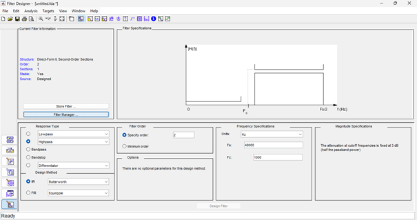 |
|
Figure 5.1 – Designing filter for Audio 3 using MATLAB Filter Designer |
The Filter Designer App can facilitate iterative refinement of filter parameters and provides intuitive understanding of how design choices affect filter behaviour. For future work, this tool could be employed to explore alternative filter configurations and optimize the balance between noise removal and signal preservation.
3. Limitations of the Approach
The implemented filtering approach, while demonstrating fundamental signal processing principles, shows several limitations.
1. Fixed Filter Parameters
The filters use predetermined cutoff frequencies and orders based on initial frequency analysis. This fixed approach does not adapt to variations in noise characteristics across different portions of the audio recording. If noise levels or spectral content change over time (non-stationary noise), the fixed filters may be over-aggressive in some segments and under-aggressive in others.
2. Trade-off Between Noise Removal and Signal Preservation
Frequency-selective filters necessarily remove all content within their stopband, whether noise or signal. This project showed this limitation clearly:
· Audio 1: Removing hiss above 300 Hz also removed musical harmonics
· Audio 3: Removing rumble below 1000 Hz also removed bass content
When noise and signal occupy overlapping frequency bands, complete noise removal without signal degradation becomes impossible with simple band-limiting filters. More complex approaches that operate on time-frequency representations (e.g.: spectral subtraction, Wiener filtering) can provide better discrimination.
3. Inability to Handle Non-Stationary Noise
The designed filters are linear time-invariant (LTI) systems, meaning their behaviour is constant over time. Noise that varies in frequency, amplitude or spectral characteristics over time (e.g., intermittent clicks, transient bursts, speech in background) cannot be effectively addressed by fixed filters. Adaptive filtering techniques that adjust their parameters based on ongoing analysis would be required for such scenarios.
4. Single Notch Limitation for Harmonic Interference
The band-stop filter for Audio 2 targets only the fundamental frequency of the interference. If the noise source produces harmonics (as fan noise often does), these components remain in the output. A more comprehensive solution would require multiple notch filters or comb filtering techniques to address the entire harmonic series.
5. Manual Design Process
Filter design in this project required manual analysis of frequency spectrums, identification of noise characteristics, calculation of appropriate parameters, and iterative testing. This process is time-consuming and requires expertise in signal processing. Automated noise profiling and filter generation algorithms could streamline this process for practical applications.
6. Lack of Perceptual Weighting
The filters are designed based purely on spectral characteristics without consideration of human auditory perception. The human ear has varying sensitivity across frequencies (as characterized by equal-loudness contours), and noise at certain frequencies is more perceptually objectionable than others. Perceptually-weighted filter design could optimize for subjective audio quality rather than just spectral modification.
7. Phase Distortion Considerations
While filtfilt() was used to eliminate phase distortion through zero-phase filtering, the IIR filter structure inherently introduces nonlinear phase characteristics. For applications requiring preservation of exact temporal relationships (e.g., multi-channel audio, room acoustics), linear-phase FIR filters might be more appropriate despite their higher computational cost.
8. SNR Metric Limitations
The project revealed that traditional SNR metrics have significant limitations for evaluating frequency-selective noise removal:
· The single-input snr() function produced counterintuitive results because it classified removed harmonics as signal loss
· The two-input reference-based approach still showed negative improvements because filters removed content containing both noise and signal
· Manual SNR calculation using provides similar results but with more explicit control.
This highlights that SNR, while valuable for broadband noise reduction assessment, may not accurately reflect perceptual improvement for band-limiting filters. Alternative metrics such as Perceptual Evaluation of Speech Quality (PESQ) or frequency-weighted SNR might provide better correlation with subjective quality.
Based on the analysis of effectiveness and limitations, several improvements could enhance the noise removal system including following improvement.
i. Machine Learning Approaches
Modern deep learning techniques for audio denoising (e.g., convolutional neural networks, recurrent neural networks, U-Net architectures) can learn complex mappings from noisy to clean audio. These approaches:
· Automatically learn optimal noise suppression strategies from training data
· Handle non-stationary and non-linear noise characteristics
· Provide superior performance for speech enhancement and music denoising
· Can be trained for specific noise types or applications
Furthermore, other several improvements can be listed as follows.
ii. Adaptive Filtering Techniques [Least Mean Squares (LMS) or Recursive Least Squares (RLS) adaptive algorithms]
iii. Spectral Subtraction Methods (using Short-Time Fourier Transform)
iv. Multi-Band Parametric Equalization
v. Optimal Cutoff Frequency Selection
vi. Harmonic Interference Removal
vii. Real-Time Implementation
viii. Perceptually-Optimized Design
ix. Alternative Filter Structures [Higher-order IIR filters, FIR filters with linear phase, Elliptic filters, Chebyshev filters]
This project successfully developed and implemented a signal processing system for analysing and removing noise from audio recordings using frequency-selective digital filters. The work addressed a practical problem faced by portable music player users: background noise contamination that degrades listening quality.
Three noisy audio recordings were analyzed using frequency domain techniques to identify distinct noise characteristics. Audio Signal 1 exhibited high-frequency hiss, Audio Signal 2 contained tonal interference at 50.67 Hz characteristic of fan noise, and Audio Signal 3 demonstrated low-frequency rumble. Based on this analysis, appropriate digital filters were designed: a first-order low-pass filter at 300 Hz for Audio 1, a second-order band-stop filter centered at 50.67 Hz for Audio 2, and a second-order high-pass filter at 1000 Hz for Audio 3.
The filters were implemented in MATLAB using IIR Butterworth designs, selected for their maximally flat passband response. Filter coefficients were generated using the butter() function, and frequency responses were analyzed using freqz() to verify proper design characteristics. The filters were applied to the audio signals using filtfilt() for zero-phase filtering, preserving temporal relationships while removing noise.
The filtering operations showed mixed but instructive results.
Successful Noise Removal: Audio 1 and Audio 3 demonstrated effective noise reduction, with subjective listening tests confirming substantial improvement in audio quality. The frequency spectrum comparisons quantitatively showed reduced magnitude in target frequency bands, validating filter effectiveness.
Partial Effectiveness: Audio 2's band-stop filter showed limited success in removing the tonal interference. While frequency analysis indicated some attenuation at 50.67 Hz, subjective evaluation revealed that the interference remained audible, highlighting the challenges of removing persistent tonal components with simple notch filters.
Trade-offs in Filter Design: The project revealed an inherent trade-off between aggressive noise removal and signal preservation. Audio 3's high-pass filter at 1000 Hz completely eliminated rumble but also removed substantial bass content, as evidenced by the highest MSE value (0.04111). This demonstrates that effective noise removal often requires accepting some degree of desired signal degradation when noise and signal occupy overlapping frequency bands.
SNR Metric Limitations: Traditional Signal-to-Noise Ratio calculations proved inadequate for evaluating frequency-selective filters. Both single-input and two-input snr() function methods yielded negative SNR improvements, despite subjective confirmation of improved audio quality. This occurred because the filters intentionally removed frequency bands containing both noise and signal content. The negative SNR improvements (-2.71 dB, -0.75 dB, -10.43 dB) quantitatively reflected the removal of harmonic content alongside noise, illustrating that perceptual quality improvement does not always correlate with conventional SNR metrics for band-limiting applications.
Mean Square Error as Alternative Metric: MSE values (0.00295, 0.00846, 0.04111) provided more reliable indicators of filter aggressiveness, directly quantifying the energy removed from each signal. Combined with frequency spectrum analysis and subjective evaluation, MSE offered meaningful assessment of filtering effectiveness.
The project successfully demonstrated fundamental signal processing concepts.
· Time-domain and frequency-domain signal analysis using FFT to transform audio signals and identify noise characteristics
· Digital filter design with calculated cutoff frequencies, normalized frequencies, and justified filter orders
· Filter implementation using MATLAB functions and verification through frequency response analysis
· Performance evaluation using multiple metrics including MSE, SNR, frequency spectrum comparison, and subjective assessment
· Zero-phase filtering implementation to preserve audio timing characteristics
The work also highlighted the importance of using multiple evaluation methods. Quantitative metrics alone (particularly SNR in this application) proved insufficient for comprehensive assessment. The combination of objective measurements, visual frequency analysis, and subjective listening provided the most complete understanding of filtering effectiveness.
This project provided practical experience in;
· Signal acquisition and preprocessing: Converting audio formats, loading signals into MATLAB, handling stereo-to-mono conversion
· Frequency analysis techniques: Computing and interpreting FFT results, identifying noise components in magnitude spectrums
· Filter design methodology: Selecting appropriate filter types, calculating design parameters, justifying design choices
· MATLAB implementation: Using signal processing functions (fft(), butter(), filtfilt(), freqz(), snr()), generating publication-quality plots, documenting code
· Critical evaluation: Interpreting quantitative metrics, recognizing metric limitations, correlating objective and subjective assessments
The challenges encountered particularly the limited effectiveness of the band-stop filter and the counterintuitive SNR results provided valuable lessons in the complexities of real-world signal processing applications and the limitations of idealized approaches.
The techniques developed in this project have direct applications in;
· Portable music players: Implementing real-time noise reduction for improved listening quality
· Audio production: Post-processing recorded material to remove environmental noise
· Telecommunications: Enhancing speech signals by removing background interference
· Hearing aids: Filtering unwanted environmental noise to improve speech intelligibility
· Automotive audio systems: Reducing Road and engine noise in vehicle entertainment systems
The fundamental principles of frequency analysis and filter design demonstrated here extend beyond audio processing to numerous fields including biomedical signal processing, vibration analysis, instrumentation, and communications systems.
6.Remarks
This project demonstrated that basic frequency-selective digital filters properly designed based on thorough frequency domain analysis can effectively reduce specific types of noise in audio signals. The first-order low-pass filter successfully removed high-frequency hiss and the second-order high-pass filter eliminated low-frequency rumble, both confirmed through subjective listening despite negative SNR improvements in quantitative assessment.
The project achieved its core objectives: demonstrating signal processing fundamentals, designing and implementing digital filters, analysing signal characteristics in both time and frequency domains, and evaluating performance through multiple metrics. The combination of theoretical knowledge, practical implementation, quantitative analysis, and subjective evaluation provided comprehensive understanding of audio signal processing principles applicable to real-world engineering challenges.
The experience gained through this work including troubleshooting unexpected results, interpreting conflicting metrics, and balancing competing design objectives represents valuable preparation for more advanced signal processing applications. Future work building on these foundations could explore sophisticated adaptive algorithms, machine learning approaches, and perceptually-optimized designs that push beyond the limitations of basic frequency-selective filtering.
|
01. |
Practical
Introduction to Digital Filtering, MathWorks |
|
02. |
Introduction
to Filter Designer, MathWorks |
|
03. |
Smoothing & Denoising, MathWorks (https://www.mathworks.com/help/signal/smoothing-and-denoising.html) |
|
04. |
Real-Time
Audio in MATLAB, MathWorks |
|
05. |
Denoising Overview, MathWorks |
|
06. |
MATLAB
Central thread [Can you help remove the noise from this audio file?], MathWorks |
|
07. |
Noise Machines by MyNoise.net [Simulating Noises] |
|
08. |
Audacity
[Software] |
|
09. |
Crysis 3 (PC) OST by Crytek G.m.b.H [Music] |
|
10. |
Last
Summer by Ikson™, YouTube [Music] |
|
11. |
Dreams
- Chill Royalty Free Music by Bensound, YouTube [Music] |
|
12. |
MATLAB
2024b by MathWorks [Software] |
|
13. |
Signal Processing Toolbox, MathWorks (https://www.mathworks.com/help/signal/ug/frequency-domain-analysis-using-the-fft.html) |
|
14. |
butter Function, MathWorks |
Full MATLAB code (.m) that used for this project
% Clear workspace
clear; clc; close all;
% Load
audio files
[audio1, Fs1] = audioread('../audio/wav/Crysis3Intro.wav');
[audio2, Fs2] = audioread('../audio/wav/DreamsBenSound.wav');
[audio3, Fs3] = audioread('../audio/wav/LastSummer.wav');
%
Convert stereo to mono if necessary
if size(audio1, 2) ==
2, audio1 = mean(audio1, 2); end
if size(audio2, 2) ==
2, audio2 = mean(audio2, 2); end
if size(audio3, 2) ==
2, audio3 = mean(audio3, 2); end
% Create
Time Vectors
N1 = length(audio1);
N2 = length(audio2);
N3 = length(audio3);
t1 = (0:N1-1) / Fs1;
t2 = (0:N2-1) / Fs2;
t3 = (0:N3-1) / Fs3;
%
Time-Domain waveforms in one figure
figure;
subplot(3,1,1);
plot(t1, audio1);
xlabel('Time
(s)');
ylabel('Amplitude');
title('Audio
Signal 1 - Time Domain');
grid on;grid("minor");
subplot(3,1,2);
plot(t2, audio2);
xlabel('Time
(s)');
ylabel('Amplitude');
title('Audio
Signal 2 - Time Domain');
grid on;grid("minor");
subplot(3,1,3);
plot(t3, audio3);
xlabel('Time
(s)');
ylabel('Amplitude');
title('Audio
Signal 3 - Time Domain');
grid on;grid("minor");
%
Display Sampling Frequencies
fprintf('Sampling
Frequencies:\n');
fprintf('Audio
1: Fs = %d Hz\n', Fs1);
fprintf('Audio
2: Fs = %d Hz\n', Fs2);
fprintf('Audio
3: Fs = %d Hz\n', Fs3);
%
Section 02: Frequency Domain Analysis
%
Compute FFT for Audio 1
Y1 = fft(audio1); % Compute FFT
P2_1 = abs(Y1/N1); % Two-sided spectrum
P1_1 = P2_1(1:N1/2+1); % Single-sided
P1_1(2:end-1) = 2*P1_1(2:end-1); % Adjust amplitude
f1 = Fs1*(0:(N1/2))/N1; % Frequency vector
%
Compute FFT for Audio 2
Y2 = fft(audio2);
P2_2 = abs(Y2/N2);
P1_2 = P2_2(1:N2/2+1);
P1_2(2:end-1) = 2*P1_2(2:end-1);
f2 = Fs2*(0:(N2/2))/N2;
%
Compute FFT for Audio 3
Y3 = fft(audio3);
P2_3 = abs(Y3/N3);
P1_3 = P2_3(1:N3/2+1);
P1_3(2:end-1) = 2*P1_3(2:end-1);
f3 = Fs3*(0:(N3/2))/N3;
%
Identify Fundamental Frequencies
[~, idx1] = max(P1_1);
fund_freq1 = f1(idx1);
[~, idx2] = max(P1_2);
fund_freq2 = f2(idx2);
[~, idx3] = max(P1_3);
fund_freq3 = f3(idx3);
fprintf('\nFundamental
Frequency Components:\n');
fprintf('Audio
1: %.2f Hz\n', fund_freq1);
fprintf('Audio
2: %.2f Hz\n', fund_freq2);
fprintf('Audio
3: %.2f Hz\n', fund_freq3);
% Plot
Single-Sided Magnitude Spectrums
figure;
subplot(3,1,1);
plot(f1, P1_1);
xlabel('Frequency
(Hz)');
ylabel('Magnitude');
title('Audio
Signal 1 - Single-Sided Magnitude Spectrum');
grid on;grid("minor");
xlim([0 Fs1/2]);
subplot(3,1,2);
plot(f2, P1_2);
xlabel('Frequency
(Hz)');
ylabel('Magnitude');
title('Audio
Signal 2 - Single-Sided Magnitude Spectrum');
grid on;grid("minor");
xlim([0 Fs2/2]);
subplot(3,1,3);
plot(f3, P1_3);
xlabel('Frequency
(Hz)');
ylabel('Magnitude');
title('Audio
Signal 3 - Single-Sided Magnitude Spectrum');
grid on;grid("minor");
xlim([0 Fs3/2]);
% Audio
1: Analysis
fprintf('\n---
AUDIO 1 ANALYSIS ---\n');
% Calculate
average magnitudes in different bands
mag_0_50 = mean(P1_1(f1 >= 10 & f1 <= 50));
mag_50_100 = mean(P1_1(f1 >= 50 & f1 <= 100));
mag_100_200 = mean(P1_1(f1 >= 100 & f1 <= 200));
mag_200_400 = mean(P1_1(f1 >= 200 & f1 <= 400));
fprintf('Average
Magnitude Analysis:\n');
fprintf('
10-50 Hz: %.6f\n', mag_0_50);
fprintf('
50-100 Hz: %.6f\n', mag_50_100);
fprintf('
100-200 Hz: %.6f\n', mag_100_200);
fprintf('
200-400 Hz: %.6f\n', mag_200_400);
% Audio
3: Analysis
fprintf('\n---
AUDIO 3 ANALYSIS ---\n');
%
Calculate average magnitudes in different bands
mag_1k_4k = mean(P1_3(f3 >= 1000 & f3 <= 4000));
mag_4k_8k = mean(P1_3(f3 >= 4000 & f3 <= 8000));
mag_8k_12k = mean(P1_3(f3 >= 8000 & f3 <= 12000));
fprintf('Average
Magnitude Analysis:\n');
fprintf('
1-4 kHz: %.6f\n', mag_1k_4k);
fprintf('
4-8 kHz: %.6f\n', mag_4k_8k);
fprintf('
8-12 kHz: %.6f\n', mag_8k_12k);
%
Section 03a & 03b: Filter Design and Frequency Response
% Design
Filter 1: Low-Pass for Audio 1 (Hiss Removal)
% First-order
Butterworth low-pass filter
fc1 = 300;
fc1_norm = fc1 / (Fs1/2);
order1 = 1;
[b1, a1] = butter(order1, fc1_norm, 'low');
fprintf('Filter
1 (Low-Pass) designed:\n');
fprintf('
Cutoff: %d Hz, Order: %d\n', fc1, order1);
% Design
Filter 2: Band-Stop for Audio 2 (Fan Noise Removal)
%
Second-order Butterworth band-stop filter
fc2_center = 50.67;
fc2_bw = 8;
fc2_low = fc2_center - fc2_bw/2;
fc2_high = fc2_center + fc2_bw/2;
fc2_low_norm = fc2_low / (Fs2/2);
fc2_high_norm = fc2_high / (Fs2/2);
order2 = 2;
[b2, a2] = butter(order2, [fc2_low_norm fc2_high_norm], 'stop');
fprintf('Filter
2 (Band-Stop) designed:\n');
fprintf('
Center: %.2f Hz, Bandwidth: %d Hz, Order: %d\n', fc2_center, fc2_bw, order2);
% Design
Filter 3: High-Pass for Audio 3 (Rumble Removal)
%
Second-order Butterworth high-pass filter
fc3 = 1000;
fc3_norm = fc3 / (Fs3/2);
order3 = 2;
[b3, a3] = butter(order3, fc3_norm, 'high');
fprintf('Filter
3 (High-Pass) designed:\n');
fprintf('
Cutoff: %d Hz, Order: %d\n', fc3, order3);
% Plot
Frequency Responses
figure;
freqz(b1, a1, 1024, Fs1);
title('Filter
1: Low-Pass Filter Frequency Response (Audio 1 - Hiss Removal)');
figure;
freqz(b2, a2, 1024, Fs2);
title('Filter
2: Band-Stop Filter Frequency Response (Audio 2 - Fan Noise Removal)');
figure;
freqz(b3, a3, 1024, Fs3);
title('Filter
3: High-Pass Filter Frequency Response (Audio 3 - Rumble Removal)');
fprintf('\nAll
filters designed and frequency responses plotted.\n');
% =====
SECTION 03c: APPLY FILTERS =====
fprintf('\n---
APPLYING FILTERS ---\n');
% Apply
using filtfilt for zero-phase filtering
filtered_audio1 = filtfilt(b1, a1, audio1);
filtered_audio2 = filtfilt(b2, a2, audio2);
filtered_audio3 = filtfilt(b3, a3, audio3);
fprintf('Filters
applied successfully.\n');
% =====
SAVE FILTERED AUDIO FILES =====
fprintf('\nSAVING
FILTERED AUDIO FILES\n');
%
Normalize to prevent clipping
filtered_audio1_norm = filtered_audio1 / max(abs(filtered_audio1));
filtered_audio2_norm = filtered_audio2 / max(abs(filtered_audio2));
filtered_audio3_norm = filtered_audio3 / max(abs(filtered_audio3));
% Save
files
audiowrite('filtered_Crysis3Intro_LPF.wav', filtered_audio1_norm, Fs1);
audiowrite('filtered_DreamsBenSound_BSF.wav', filtered_audio2_norm, Fs2);
audiowrite('filtered_LastSummer_HPF.wav', filtered_audio3_norm, Fs3);
%
Compute FFT of Filtered Signals
% FFT of
Filtered Audio 1
Y1_filt = fft(filtered_audio1);
P2_1_filt = abs(Y1_filt/N1);
P1_1_filt = P2_1_filt(1:N1/2+1);
P1_1_filt(2:end-1) = 2*P1_1_filt(2:end-1);
f1_filt = Fs1*(0:(N1/2))/N1;
% FFT of
Filtered Audio 2
Y2_filt = fft(filtered_audio2);
P2_2_filt = abs(Y2_filt/N2);
P1_2_filt = P2_2_filt(1:N2/2+1);
P1_2_filt(2:end-1) = 2*P1_2_filt(2:end-1);
f2_filt = Fs2*(0:(N2/2))/N2;
% FFT of
Filtered Audio 3
Y3_filt = fft(filtered_audio3);
P2_3_filt = abs(Y3_filt/N3);
P1_3_filt = P2_3_filt(1:N3/2+1);
P1_3_filt(2:end-1) = 2*P1_3_filt(2:end-1);
f3_filt = Fs3*(0:(N3/2))/N3;
fprintf('FFT
computed for all filtered signals.\n');
% Figure
1: Audio 1 Comparison
figure;
subplot(2,1,1);
plot(f1, P1_1, 'LineWidth', 1.5);
xlabel('Frequency
(Hz)');
ylabel('Magnitude');
title('Audio
1: Original Signal - Frequency Spectrum');
grid on;grid("minor");
%
xlim([0 5000]);
subplot(2,1,2);
plot(f1_filt, P1_1_filt, 'r', 'LineWidth', 1.5);
xlabel('Frequency
(Hz)');
ylabel('Magnitude');
title('Audio
1: Filtered Signal - Frequency Spectrum');
grid on;grid("minor");
%
xlim([0 5000]);
sgtitle('Audio
1: Original vs Filtered Frequency Spectrum Comparison', 'FontSize', 12, 'FontWeight', 'bold');
% Figure
2: Audio 2 Comparison
figure;
subplot(2,1,1);
plot(f2, P1_2, 'LineWidth', 1.5);
xlabel('Frequency
(Hz)');
ylabel('Magnitude');
title('Audio
2: Original Signal - Frequency Spectrum');
grid on;grid("minor");
%
xlim([0 200]);
subplot(2,1,2);
plot(f2_filt, P1_2_filt, 'r', 'LineWidth', 1.5);
xlabel('Frequency
(Hz)');
ylabel('Magnitude');
title('Audio
2: Filtered Signal - Frequency Spectrum');
grid on;grid("minor");
%
xlim([0 200]);
sgtitle('Audio
2: Original vs Filtered Frequency Spectrum Comparison', 'FontSize', 12, 'FontWeight', 'bold');
% Figure
3: Audio 3 Comparison
figure;
subplot(2,1,1);
plot(f3, P1_3, 'LineWidth', 1.5);
xlabel('Frequency
(Hz)');
ylabel('Magnitude');
title('Audio
3: Original Signal - Frequency Spectrum');
grid on;grid("minor");
%
xlim([0 3000]);
subplot(2,1,2);
plot(f3_filt, P1_3_filt, 'r', 'LineWidth', 1.5);
xlabel('Frequency
(Hz)');
ylabel('Magnitude');
title('Audio
3: Filtered Signal - Frequency Spectrum');
grid on;grid("minor");
%
xlim([0 3000]);
sgtitle('Audio
3: Original vs Filtered Frequency Spectrum Comparison', 'FontSize', 12, 'FontWeight', 'bold');
%
Section 03e: Display FFT Results of Filtered Signals
% Audio
1 Filtered
fprintf('\nAudio
1 (Filtered):\n');
fprintf('
Sampling Frequency: %d Hz\n', Fs1);
fprintf('
Number of Samples: %d\n', length(filtered_audio1));
fprintf('
Frequency Resolution: %.2f Hz\n', Fs1/length(filtered_audio1));
fprintf('
Max Magnitude in 0-300 Hz: %.6f\n', max(P1_1_filt(f1_filt <= 300)));
fprintf('
Max Magnitude in 300-5000 Hz: %.6f\n', max(P1_1_filt(f1_filt > 300 & f1_filt <= 5000)));
% Audio
2 Filtered
fprintf('\nAudio
2 (Filtered):\n');
fprintf('
Sampling Frequency: %d Hz\n', Fs2);
fprintf('
Number of Samples: %d\n', length(filtered_audio2));
fprintf('
Frequency Resolution: %.2f Hz\n', Fs2/length(filtered_audio2));
fprintf('
Magnitude at ~50 Hz (Original): %.6f\n', P1_2(find(f2 >= 50, 1)));
fprintf('
Magnitude at ~50 Hz (Filtered): %.6f\n', P1_2_filt(find(f2_filt >= 50, 1)));
% Audio
3 Filtered
fprintf('\nAudio
3 (Filtered):\n');
fprintf('
Sampling Frequency: %d Hz\n', Fs3);
fprintf('
Number of Samples: %d\n', length(filtered_audio3));
fprintf('
Frequency Resolution: %.2f Hz\n', Fs3/length(filtered_audio3));
fprintf('
Max Magnitude in 0-1000 Hz: %.6f\n', max(P1_3_filt(f3_filt <= 1000)));
fprintf('
Max Magnitude in 1000-5000 Hz: %.6f\n', max(P1_3_filt(f3_filt > 1000 & f3_filt <= 5000)));
%
Section 03f: Audio Playback and Subjective Assessment
% Audio
1 Comparison
%
fprintf('\nPlaying Audio 1 - Original (5 seconds)...\n');
%
sound(audio1(1:min(Fs1*5, length(audio1))), Fs1);
%
pause(6);
%
fprintf('Playing Audio 1 - Filtered (5 seconds)...\n');
%
sound(filtered_audio1(1:min(Fs1*5, length(filtered_audio1))), Fs1);
%
pause(6);
% Audio
2 Comparison
%
fprintf('\nPlaying Audio 2 - Original (5 seconds)...\n');
%
sound(audio2(1:min(Fs2*5, length(audio2))), Fs2);
%
pause(6);
%
fprintf('Playing Audio 2 - Filtered (5 seconds)...\n');
%
sound(filtered_audio2(1:min(Fs2*5, length(filtered_audio2))), Fs2);
%
pause(6);
% Audio
3 Comparison
%
fprintf('\nPlaying Audio 3 - Original (5 seconds)...\n');
%
sound(audio3(1:min(Fs3*5, length(audio3))), Fs3);
%
pause(6);
%
fprintf('Playing Audio 3 - Filtered (5 seconds)...\n');
%
sound(filtered_audio3(1:min(Fs3*5, length(filtered_audio3))), Fs3);
%
pause(6);
%
fprintf('\nAudio playback testing complete.\n');
% Audio
Playback was commented to increase MATLAB running preformance,
% for
external media player can be use to play original & exported filtered
% audio
%
Section 04: Performance Evaluation
%
Section 04a: Calculate Mean Square Error (MSE)
fprintf('\n---
Mean Square Error (MSE) Calculation ---\n');
% MSE
between original (noisy) and filtered signals
MSE1 = mean((audio1 - filtered_audio1).^2);
MSE2 = mean((audio2 - filtered_audio2).^2);
MSE3 = mean((audio3 - filtered_audio3).^2);
fprintf('Audio
1 MSE: %.8f\n', MSE1);
fprintf('Audio
2 MSE: %.8f\n', MSE2);
fprintf('Audio
3 MSE: %.8f\n', MSE3);
%
Section 04b: Calculate SNR Improvement using MATLAB snr() function
fprintf('\n---
Signal-to-Noise Ratio (SNR) Calculation ---\n');
% Using
snr(x)
%
Calculate SNR for original (noisy) signals
SNR1_original = snr(audio1);
SNR2_original = snr(audio2);
SNR3_original = snr(audio3);
fprintf('Original
SNR (Noisy Signals):\n');
fprintf('
Audio 1: %.2f dB\n', SNR1_original);
fprintf('
Audio 2: %.2f dB\n', SNR2_original);
fprintf('
Audio 3: %.2f dB\n', SNR3_original);
%
Calculate SNR for filtered signals
SNR1_filtered = snr(filtered_audio1);
SNR2_filtered = snr(filtered_audio2);
SNR3_filtered = snr(filtered_audio3);
fprintf('\nFiltered
SNR (After Noise Removal):\n');
fprintf('
Audio 1: %.2f dB\n', SNR1_filtered);
fprintf('
Audio 2: %.2f dB\n', SNR2_filtered);
fprintf('
Audio 3: %.2f dB\n', SNR3_filtered);
%
Calculate SNR improvement
SNR_improvement1 = SNR1_filtered - SNR1_original;
SNR_improvement2 = SNR2_filtered - SNR2_original;
SNR_improvement3 = SNR3_filtered - SNR3_original;
fprintf('\nSNR
Improvement:\n');
fprintf('
Audio 1: %.2f dB\n', SNR_improvement1);
fprintf('
Audio 2: %.2f dB\n', SNR_improvement2);
fprintf('
Audio 3: %.2f dB\n', SNR_improvement3);
%
Present Results in Table Format
fprintf('\nPERFORMANCE
EVALUATION SUMMARY TABLE using snr(x) \n');
fprintf('\n%-12s
%-15s %-18s %-18s %-20s\n', 'Audio File', 'MSE', 'Original SNR (dB)', 'Filtered SNR (dB)', 'SNR Improvement (dB)');
fprintf('%-12s
%-15s %-18s %-18s %-20s\n', '----------', '-------------', '------------------', '------------------', '--------------------');
fprintf('%-12s
%-15.8f %-18.2f %-18.2f %-20.2f\n', 'Audio 1', MSE1, SNR1_original, SNR1_filtered, SNR_improvement1);
fprintf('%-12s
%-15.8f %-18.2f %-18.2f %-20.2f\n', 'Audio 2', MSE2, SNR2_original, SNR2_filtered, SNR_improvement2);
fprintf('%-12s
%-15.8f %-18.2f %-18.2f %-20.2f\n', 'Audio 3', MSE3, SNR3_original, SNR3_filtered, SNR_improvement3);
fprintf('\n');
%
Method: Use filtered signal as reference (clean signal)
%
Calculate SNR by comparing noisy vs clean reference
% Using
snr(x,y)
% Audio
1: SNR calculation
SNR1_original = snr(audio1, audio1 - filtered_audio1); % signal, noise
SNR1_filtered = snr(filtered_audio1, audio1 - filtered_audio1);
% Audio
2: SNR calculation
SNR2_original = snr(audio2, audio2 - filtered_audio2);
SNR2_filtered = snr(filtered_audio2, audio2 - filtered_audio2);
% Audio
3: SNR calculation
SNR3_original = snr(audio3, audio3 - filtered_audio3);
SNR3_filtered = snr(filtered_audio3, audio3 - filtered_audio3);
fprintf('Original
SNR (with noise):\n');
fprintf('
Audio 1: %.2f dB\n', SNR1_original);
fprintf('
Audio 2: %.2f dB\n', SNR2_original);
fprintf('
Audio 3: %.2f dB\n', SNR3_original);
fprintf('\nFiltered
SNR (noise removed):\n');
fprintf('
Audio 1: %.2f dB\n', SNR1_filtered);
fprintf('
Audio 2: %.2f dB\n', SNR2_filtered);
fprintf('
Audio 3: %.2f dB\n', SNR3_filtered);
%
Calculate SNR improvement
SNR_improvement1 = SNR1_filtered - SNR1_original;
SNR_improvement2 = SNR2_filtered - SNR2_original;
SNR_improvement3 = SNR3_filtered - SNR3_original;
fprintf('\nSNR
Improvement:\n');
fprintf('
Audio 1: %.2f dB\n', SNR_improvement1);
fprintf('
Audio 2: %.2f dB\n', SNR_improvement2);
fprintf('
Audio 3: %.2f dB\n', SNR_improvement3);
%
Present Results in Table Format
fprintf('\nPERFORMANCE
EVALUATION SUMMARY TABLE using snr(x,y) \n');
fprintf('\n%-12s
%-15s %-18s %-18s %-20s\n', 'Audio File', 'MSE', 'Original SNR (dB)', 'Filtered SNR (dB)', 'SNR Improvement (dB)');
fprintf('%-12s
%-15s %-18s %-18s %-20s\n', '----------', '-------------', '------------------', '------------------', '--------------------');
fprintf('%-12s
%-15.8f %-18.2f %-18.2f %-20.2f\n', 'Audio 1', MSE1, SNR1_original, SNR1_filtered, SNR_improvement1);
fprintf('%-12s
%-15.8f %-18.2f %-18.2f %-20.2f\n', 'Audio 2', MSE2, SNR2_original, SNR2_filtered, SNR_improvement2);
fprintf('%-12s
%-15.8f %-18.2f %-18.2f %-20.2f\n', 'Audio 3', MSE3, SNR3_original, SNR3_filtered, SNR_improvement3);